As cinco maiores cidades do estado de Minas Gerais
- Belo Horizonte
- Uberlândia
- Contagem
- Juiz de Fora
- Betim
Belo Horizonte
Belo Horizonte é a capital do estado e um importante centro administrativo, econômico e cultural.
População: ~2,5 milhões
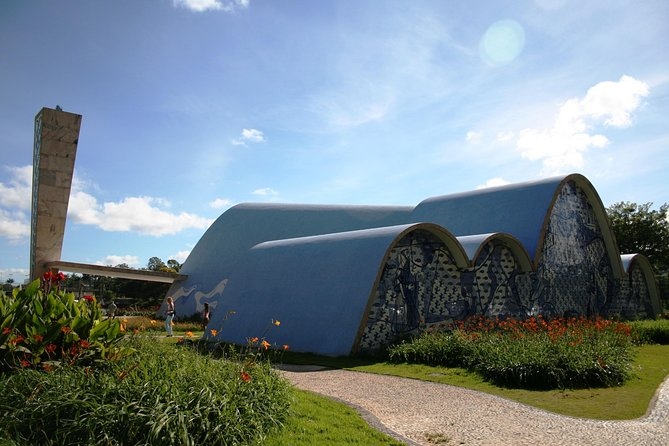
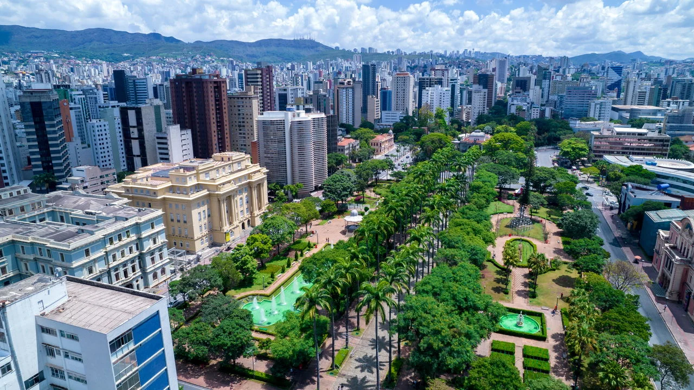
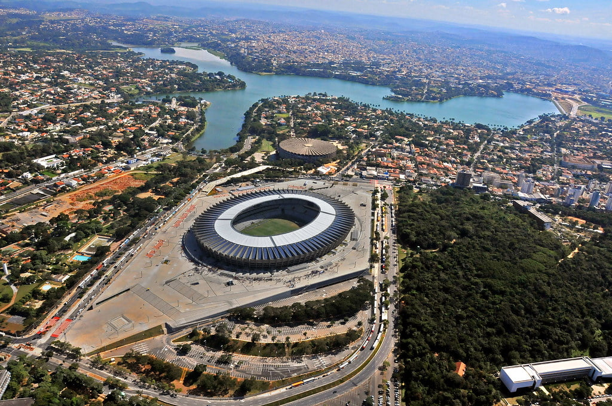
Voltar ao topo
Página principal
Uberlândia
Uberlândia tem forte presença no agronegócio e no setor de serviços.
População: ~711 mil
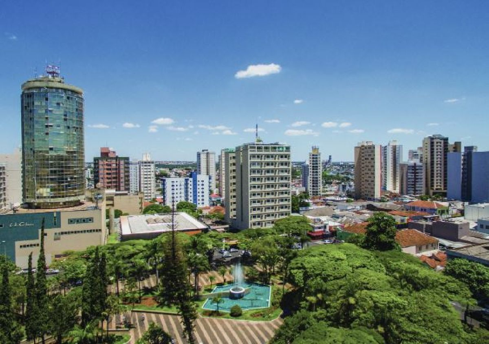
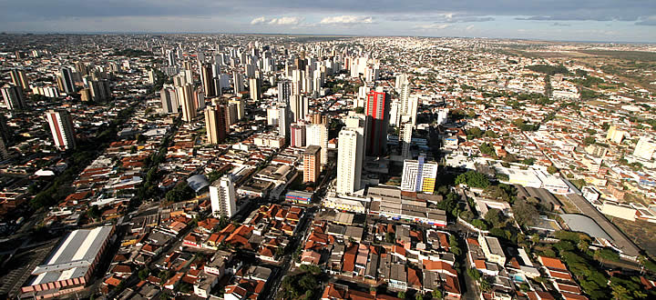
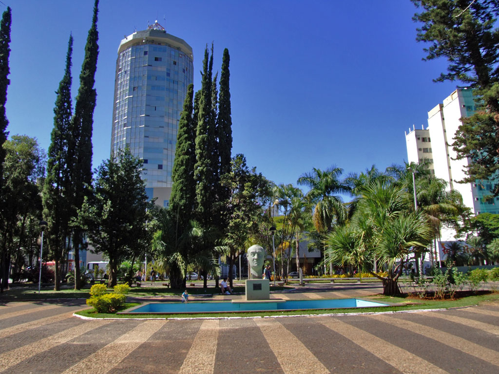
Voltar ao topo
Página principal
Contagem
Contagem faz parte da Região Metropolitana de BH, com grande foco industrial.
População: ~673 mil
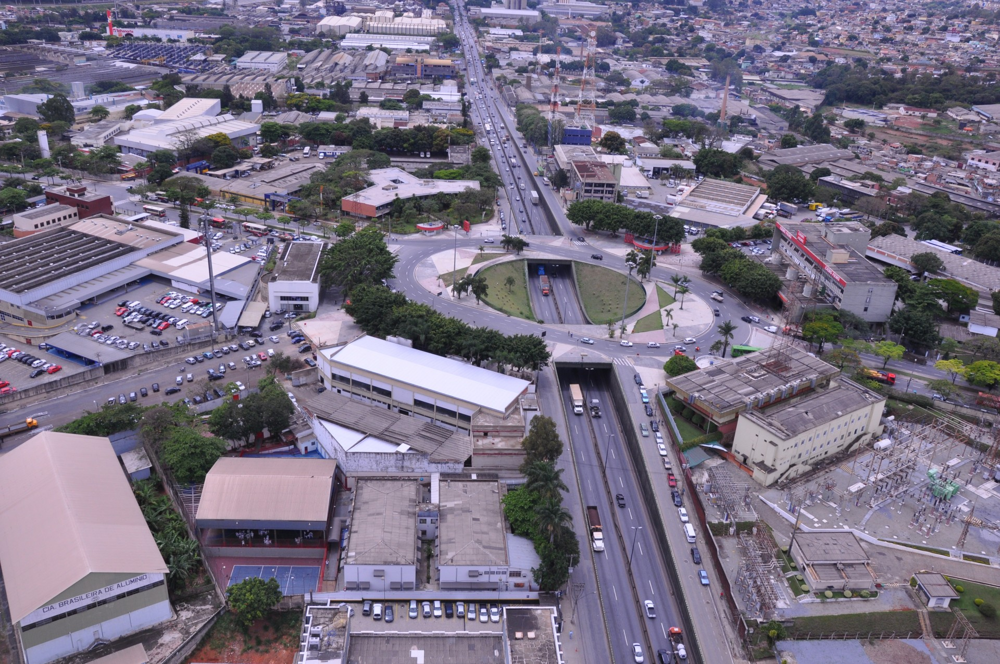
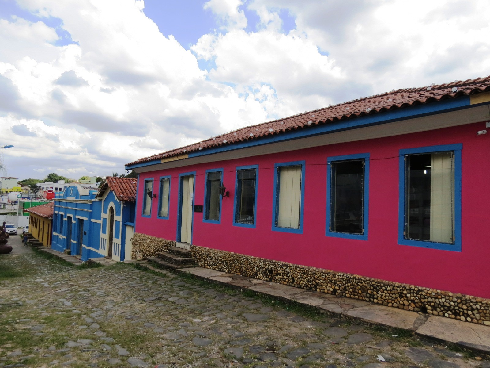
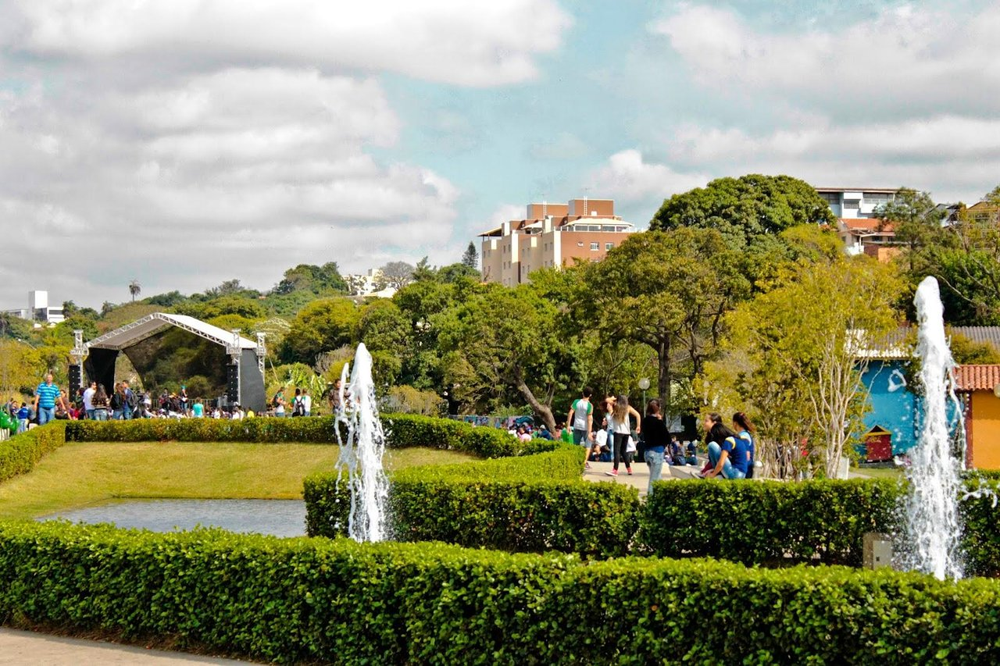
Voltar ao topo
Página principal
Juiz de Fora
Juiz de Fora é um importante polo regional, com destaque para educação e serviços.
População: ~586 mil
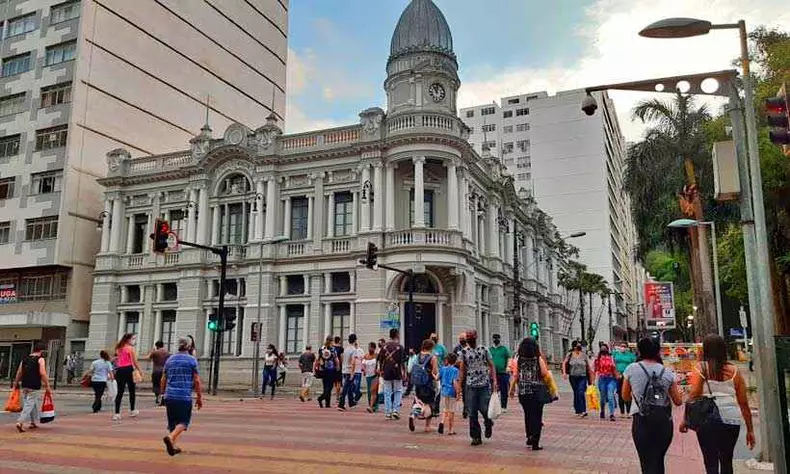
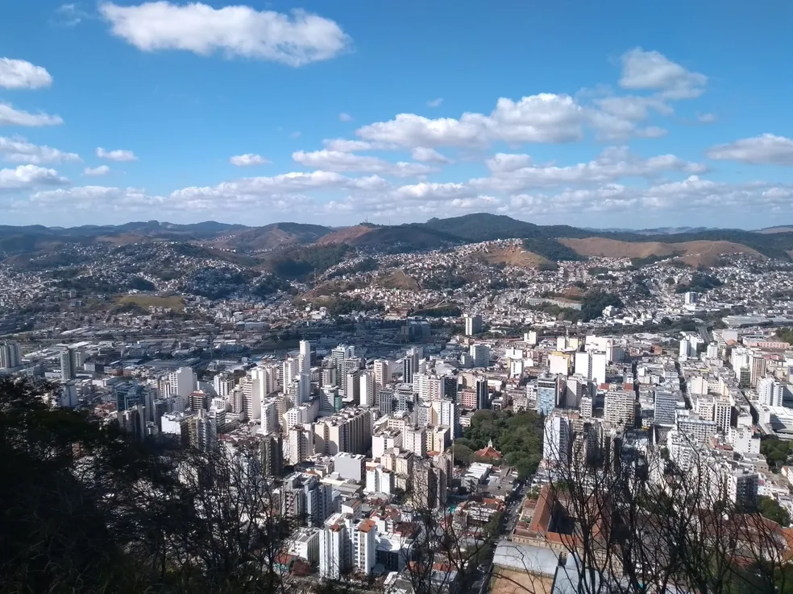
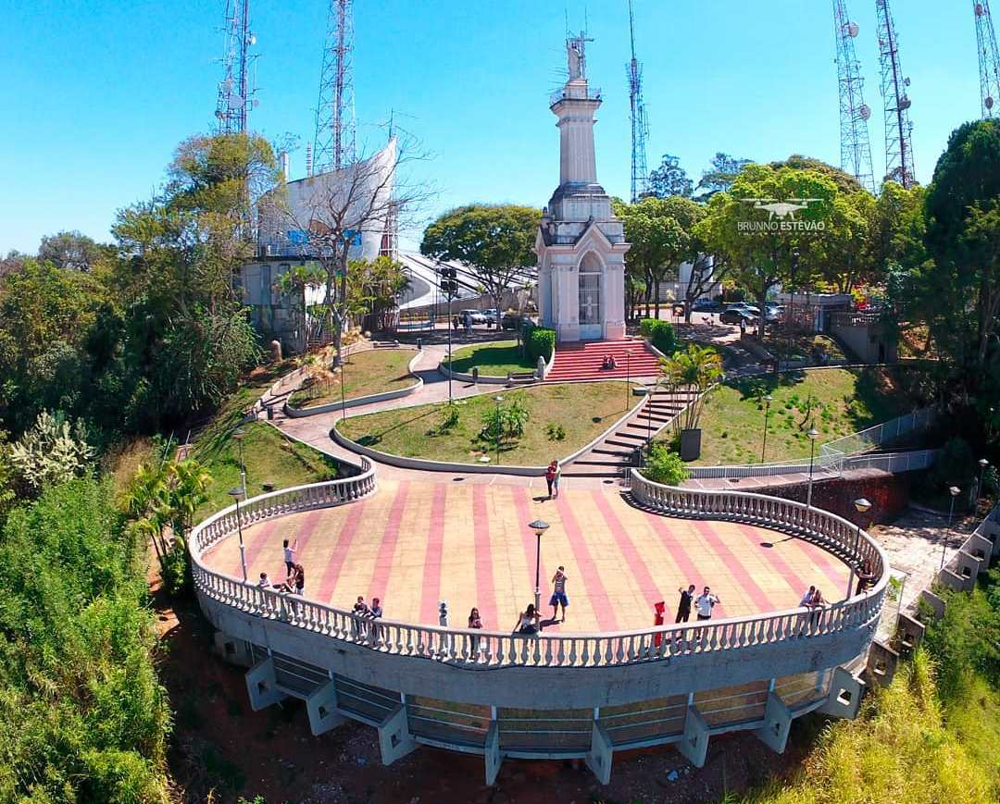
Voltar ao topo
Página principal
Betim
Betim, também na Região Metropolitana de BH, abriga grandes indústrias, incluindo a Fiat.
População: ~450 mil
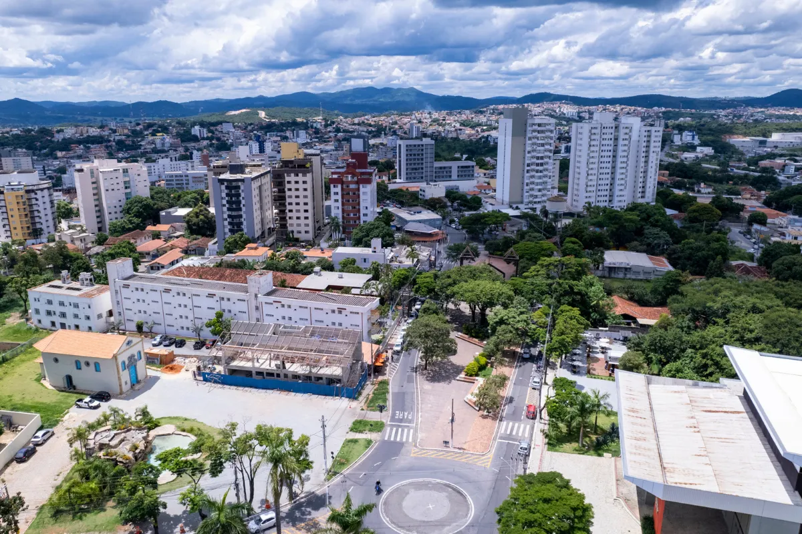
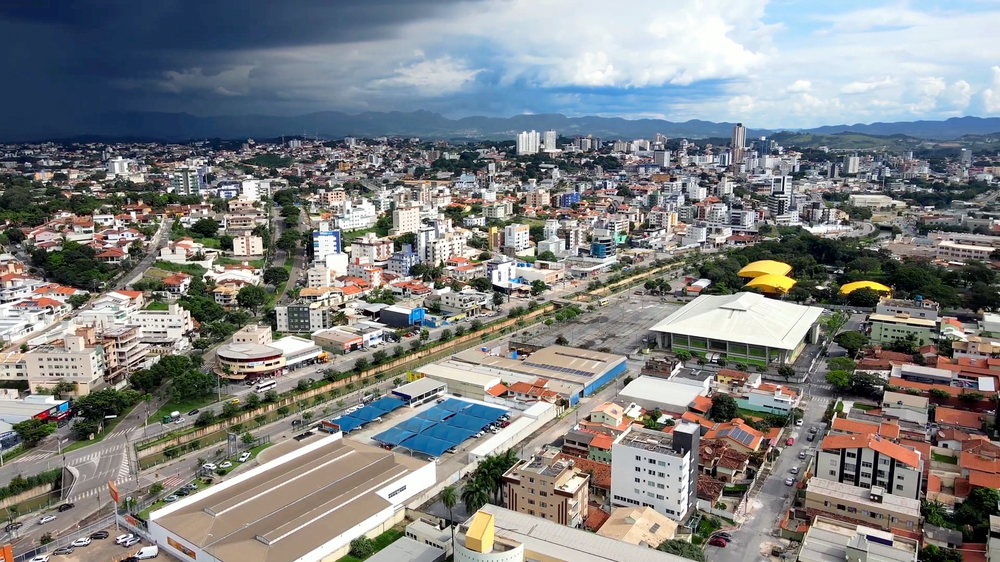
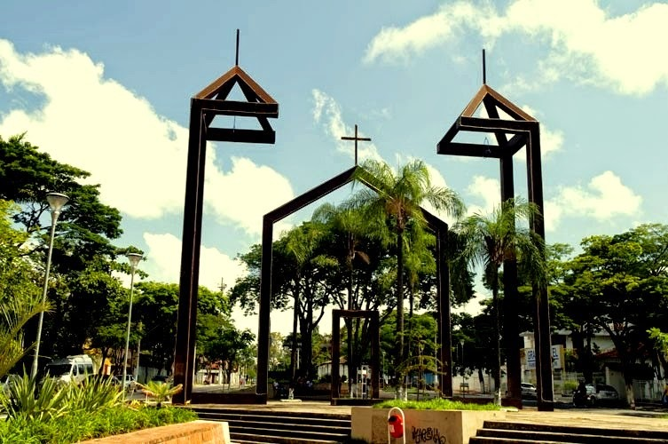
Voltar ao topo
Página principal